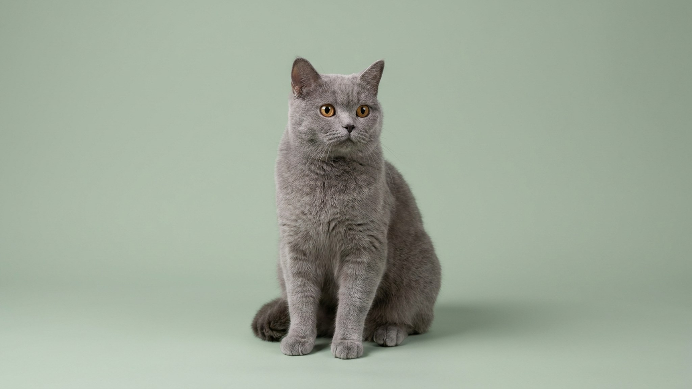

Всё лето дом был полон: дети шумели, бегали, постоянно оказывались рядом. Первого сентября они уходят — и питомец остаётся один в непривычной тишине на семь-восемь часов. Для многих кошек и собак это не просто скучный день, а настоящий стресс от резкой смены ритма. Если начать готовить заранее, переход пройдёт незаметно — ниже конкретный план на две недели.
🐾 Хотите понять, что питомец говорит вам?
Опишите ситуацию или пришлите видео в AnimaLife — AI разберёт поведение вашего питомца и подскажет, что делать. Бесплатно, ответ за минуту.
Разобрать поведение → Разобрать в MAX →
У вас iPhone? AnimaLife есть в App Store
Питомцы живут по распорядку, который складывался месяцами. Летом в доме постоянно кто-то есть: звуки, движение, совместные игры. Когда весь этот фон исчезает за несколько дней, нервная система реагирует на резкое изменение — не на содержание перемен, а именно на их скорость и непредсказуемость. Собаки переживают это острее и заметнее, кошки — по-своему, но оба вида меняют поведение при внезапной смене режима.
Лучший момент — конец августа, пока дети ещё дома. Начните вводить в распорядок короткие периоды одиночества и тишины, постепенно увеличивая их продолжительность.
Обогащение среды — ключевой инструмент против скуки. Задача: дать питомцу занятие, которое он выполняет сам, без вас.
Лёгкое беспокойство в первые два-три дня — норма: питомец привыкает. Насторожиться стоит, если изменения устойчивые и нарастают, а не сходят на нет.
Если такие признаки сохраняются больше двух недель после начала нового режима — стоит показать питомца ветеринару: специалист оценит состояние и при необходимости предложит поведенческую коррекцию.
🐾 У вашего питомца так же?
Расскажите в AnimaLife, как ведёт себя ваш питомец, — приложение объяснит причину и даст пошаговый план. Бесплатно, без записи к специалисту.
Разобрать свой случай → Разобрать в MAX →
У вас iPhone? AnimaLife есть в App Store
🐾 Понравился разбор?
Подпишитесь на канал — каждый день разбираем по одному тревожному симптому у кошек и собак: что в пределах нормы, а когда пора к врачу. Подпишитесь, чтобы не пропустить разбор, который может спасти здоровье вашего питомца.
Материал носит информационный характер и не заменяет очную консультацию ветеринара.